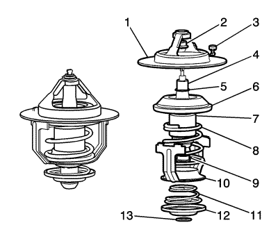

Descripción y funcionamiento del sistema de refrigeración — 2.0L Diésel LNP
Sistema de refrigeración
La función del sistema de refrigeración es mantener una temperatura de servicio del motor eficiente en todos los regímenes del motor y condiciones de funcionamiento. El sistema de refrigeración está diseñado para eliminar aproximadamente un tercio del calor producido por la combustión de la mezcla aire-combustible. Cuando el motor está frío, el refrigerante no fluye hacia el radiador hasta que el termostato se abre. Esto permite que el motor se caliente rápidamente. Consulte en la siguiente ilustración los componentes del sistema y la ruta básica que sigue el refrigerante.

El sistema de refrigeración consta de los componentes siguientes:
| • | Refrigerador de aceite del motor (2) |
| • | Ventilador de refrigeración auxiliar (8) |
| • | $colector de admisión (9) |
| • | Ventilador de refrigeración principal (10) |
Bomba de agua
La bomba de agua es un componente del sistema de refrigeración del motor y hace que circule el refrigerante por los componentes del circuito de refrigeración. La bomba de agua está formada por una junta, un cojinete, una polea (1), una carcasa (2) y un rodete (3), y es accionada por la correa de accionamiento con la parte posterior para reducir el ruido de la polea de la bomba de agua. Para evitar que los clientes tengan problemas de fuga de refrigerante, la bomba de agua dispone de un vaso con un orificio de drenaje en el tapón.
Termostato

El termostato controla la circulación de refrigerante y se monta en la carcasa de la bomba de agua. Mediante la temperatura del refrigerante, la cápsula de cera (7) del termostato dilata y contrae mecánicamente el muelle principal para que circule el refrigerante. El termostato se empieza a abrir a 80°C (176°F) y se abre por completo a los 95°C (203°F). El termostato se cierra a 75°C (167°F).
Radiador
El radiador es un intercambiador de calor. Consta de un núcleo y 2 depósitos. El núcleo de aluminio es un diseño de tubo y aletas de flujo transversal que se extiende desde el depósito de entrada al depósito de salida. Las aletas están situadas alrededor de la parte exterior de los tubos para mejorar la transferencia de calor a la atmósfera. Los depósitos de entrada y salida son de material plástico moldeado y reforzado con nailon, resistente a altas temperaturas. Una junta de goma resistente a altas temperaturas sella la brida de conexión del depósito con el núcleo de aluminio. Los depósitos están unidos al núcleo mediante lengüetas remachadas. Las lengüetas forman parte del colector de aluminio en cada extremo del núcleo. El radiador también tiene un grifo de vaciado situado en la parte inferior del depósito derecho. La unidad de vaciado incluye un grifo de vaciado y una junta. El radiador elimina el calor del refrigerante que pasa por él. Las aletas del núcleo transfieren calor del refrigerante que pasa por los tubos. A medida que el aire pasa entre los álabes, absorbe el calor y enfría el refrigerante.
Depósito de expansión
El vaso de expansión es un depósito de plástico con un tapón de presión roscado. El vaso se monta en un punto más alto que el resto de conductos de refrigerante. El vaso de expansión dispone de un espacio de aire en el sistema de refrigeración que permite que el refrigerante se dilate y se contraiga. El vaso de expansión dispone de un punto de llenado de refrigerante y de un punto de purga de aire central. Durante la utilización del vehículo, el refrigerante se calienta y se dilata. El aumento de volumen de refrigerante va a parar al vaso de expansión. Cuando circula el refrigerante, se forman burbujas gracias al aire. El refrigerante sin burbujas de aire absorbe el calor mucho mejor que el que las tiene.
Ventilador de refrigeración
Los ventiladores de refrigeración se encuentran detrás del radiador en el compartimento del motor. El ventilador de refrigeración del motor se acciona con electricidad. El ventilador de refrigeración absorbe aire por el radiador para mejorar la transferencia de calor del refrigerante a la atmósfera. Cuando giran las aspas del ventilador, aumentan el caudal de aire que pasa por el núcleo del radiador y por el condensador en vehículos con aire acondicionado (A/C). De este modo se obtiene una refrigeración más rápida con el motor al ralentí o a velocidades bajas.
| © Copyright Chevrolet. All rights reserved |